| Class | Abs. Freq. | Acc. Abs. Freq. | Rel. Freq. | Acc. Rel. Freq. | |
|---|---|---|---|---|---|
| 0 | 7963 | 7963 | 0.80 | 0.80 | |
| 1 | 2037 | 10000 | 0.20 | 1.00 |
Projeto: Previsão de Rotatividade de Clientes Bancários
Introdução
O problema de churn, ou rotatividade de clientes, representa um desafio significativo para instituições bancárias. Refere-se à taxa na qual os clientes encerram seus relacionamentos com o banco, migrando para outras instituições financeiras ou até mesmo abandonando serviços financeiros. Este fenômeno pode ser impulsionado por diversos fatores, como insatisfação com serviços, concorrência acirrada, mudanças nas condições econômicas e até mesmo avanços tecnológicos.
Dessa forma, a retenção de clientes torna-se uma prioridade estratégica para os bancos, que buscam constantemente inovar, oferecer experiências mais atrativas e personalizadas, a fim de mitigar o churn e manter uma base sólida de clientes leais.
Diante desse cenário, torna-se de extrema valia a capacidade de identificar os clientes mais propensos ao churn, possibilitando que a instituição financeira aja de maneira antecipada, oferecendo planos e serviços atrativos que impeçam a fuga do cliente.
Problema de Negócio
Temos uma base de dados do ABC Multistate Bank, a qual está hospedada em https://www.kaggle.com/datasets/gauravtopre/bank-customer-churn-dataset/data. Essa base de dados contém informações anonimizadas de 10.000 clientes, onde o problema de negócio em questão resume-se a construirmos um modelo capaz de predizer a ocorrência ou não de churn para um dado cliente, com base nas informações disponíveis.
Resolução do Problema
Análise Exploratória dos Dados (EDA)
O objetivo desta etapa é investigar e entender os dados disponíveis, a fim de extrair informações preliminares, identificar padrões, tendências, anomalias e insights relevantes.
Verificaremos que, ao término dessa análise, todas as variáveis apresentam comportamento adequado para prosseguirem no estudo, pois:
- Não possuem valores faltantes.
- Não têm valores inesperados.
- Não exibem alta concentração em um único valor.
Churn
Essa variável denota a ocorrência ou não do evento de churn.
- Não ocorrência de churn = 0
- Ocorrência de churn = 1
- Variável target (binária).
- Temos 20% de ocorrência do evento.
- Temos 80% de não ocorrência do evento.
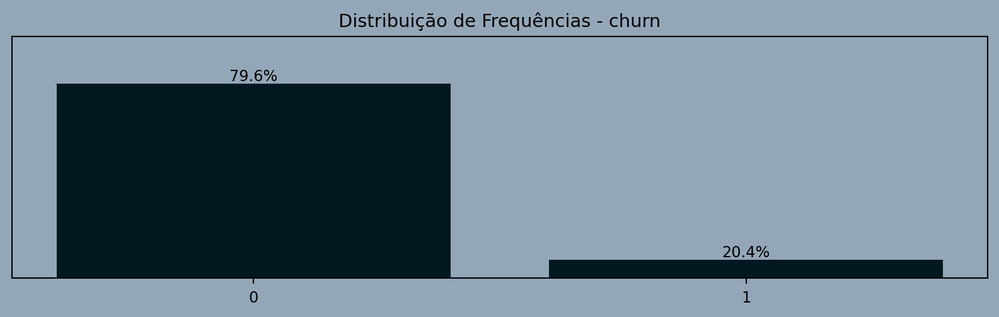
Country
País do cliente.
Avaliação: OK.- Variável categórica.
- Não possui nenhum valor faltante.
- France representa 50%.
- Germany e Spain representam 25% cada.
| Class | Abs. Freq. | Acc. Abs. Freq. | Rel. Freq. | Acc. Rel. Freq. | |
|---|---|---|---|---|---|
| France | 5014 | 5014 | 0.50 | 0.50 | |
| Germany | 2509 | 7523 | 0.25 | 0.75 | |
| Spain | 2477 | 10000 | 0.25 | 1.00 |
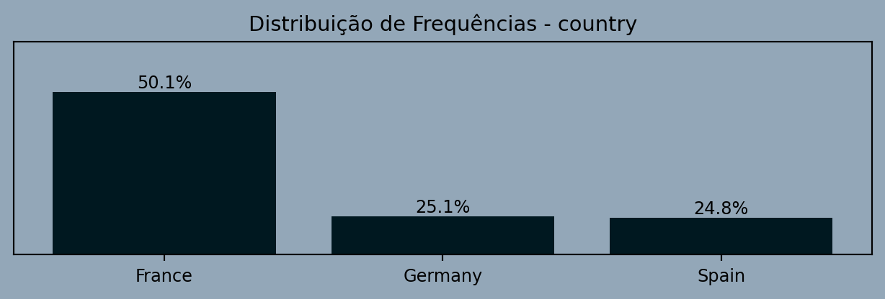
Gender
Gênero do cliente.
Avaliação: OK.- Variável categórica.
- Não possui nenhum valor faltante.
- 55% Homens.
- 45% Mulheres.
| Class | Abs. Freq. | Acc. Abs. Freq. | Rel. Freq. | Acc. Rel. Freq. | |
|---|---|---|---|---|---|
| Female | 4543 | 4543 | 0.45 | 0.45 | |
| Male | 5457 | 10000 | 0.55 | 1.00 |

Credit Card
Se o cliente utiliza cartão de crédito.
- Não utiliza cartão de crédito = 0
- Utiliza cartão de crédito = 1
- Variável categórica.
- Não possui nenhum valor faltante.
- 71% utiliza cartão de cŕedito.
- 29% não utiliza.
| Class | Abs. Freq. | Acc. Abs. Freq. | Rel. Freq. | Acc. Rel. Freq. | |
|---|---|---|---|---|---|
| 0 | 2945 | 2945 | 0.29 | 0.29 | |
| 1 | 7055 | 10000 | 0.71 | 1.00 |

Active Member
Denota se um cliente está envolvido e participando ativamente das atividades e serviços oferecidos pelo banco:
- Não ativo = 0
- Ativo = 1
- Variável categórica.
- Não possui nenhum valor faltante.
- Praticamente metade dos clientes são ativos e a outra metade é inativo.
| Class | Abs. Freq. | Acc. Abs. Freq. | Rel. Freq. | Acc. Rel. Freq. | |
|---|---|---|---|---|---|
| 0 | 4849 | 4849 | 0.48 | 0.48 | |
| 1 | 5151 | 10000 | 0.52 | 1.00 |
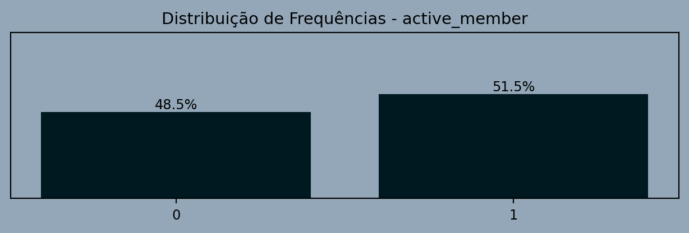
Products Number
Número de produtos adiquiridos pelo cliente.
Avaliação: OK.- Variável numérica discreta, mas será visualizada como categórica.
- Não possui nenhum valor faltante.
- ~50% dos cliente utilizam somente um produto.
- ~46% dos cliente utilizam 2 produtos.
| Class | Abs. Freq. | Acc. Abs. Freq. | Rel. Freq. | Acc. Rel. Freq. | |
|---|---|---|---|---|---|
| 1 | 5084 | 5084 | 0.51 | 0.51 | |
| 2 | 4590 | 9674 | 0.46 | 0.97 | |
| 3 | 266 | 9940 | 0.03 | 0.99 | |
| >=4 | 60 | 10000 | 0.01 | 1.00 |
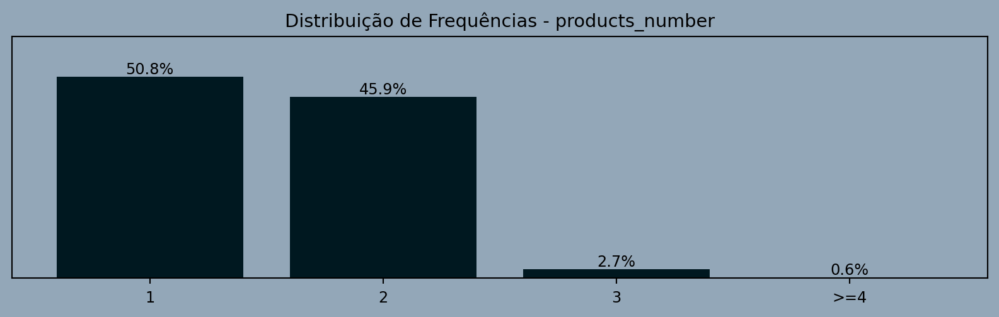
Tenure
Mensura a quantidade de anos decorridos desde que o cliente aderiu aos serviços prestados pelo banco.
Avaliação: OK.- Variável numérica discreta, mas será visualizada como categórica.
- Não possui nenhum valor faltante.
- 25% de 0 a 2 anos.
- 15% de 8 a 10 anos.
- As demais classes estão bem distribuídos em torno de 20%.
| Class | Abs. Freq. | Acc. Abs. Freq. | Rel. Freq. | Acc. Rel. Freq. | |
|---|---|---|---|---|---|
| [0, 2] | 2496 | 2496 | 0.25 | 0.25 | |
| (2, 4] | 1998 | 4494 | 0.20 | 0.45 | |
| (4, 6] | 1979 | 6473 | 0.20 | 0.65 | |
| (6, 8] | 2053 | 8526 | 0.21 | 0.85 | |
| (8, 10] | 1474 | 10000 | 0.15 | 1.00 |
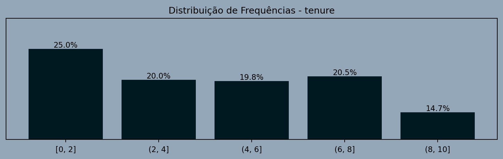
Credit Score
É uma medida da probabilidade de um indivíduo pagar suas dívidas com base em seu histórico de crédito passado.
Avaliação: OK.- Variável numérica.
- Não possui nenhum valor faltante.
- Possui distribuição aproximadamente normal, com média = 650.
| SUM | CNT | AVG | STDEV | PERC_zeros | PERC_negatives | MIN | P1 | P25 | P50 | P75 | P90 | P95 | P99 | MAX | |
|---|---|---|---|---|---|---|---|---|---|---|---|---|---|---|---|
| 6,505,288.00 | 10000 | 650.53 | 96.65 | 0.00 | 0.00 | 350.00 | 432.00 | 584.00 | 652.00 | 718.00 | 778.00 | 812.00 | 850.00 | 850.00 |
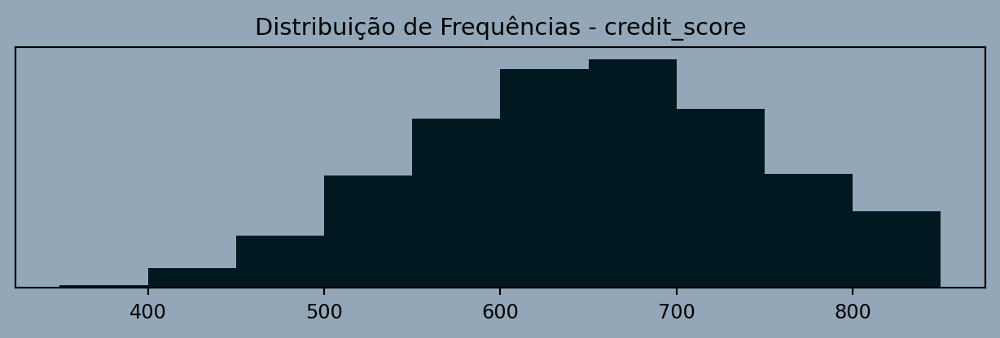
Age
Idade em anos do cliente.
Avaliação: OK.- Variável numérica.
- Não possui nenhum valor faltante.
- Possui distribuição assimétrica á direita.
- Cliente mais novo tem 18 anos.
- Cliente mais velho tem 92 anos.
- O valor mediano da idade do cliente é de 37 anos.
| SUM | CNT | AVG | STDEV | PERC_zeros | PERC_negatives | MIN | P1 | P25 | P50 | P75 | P90 | P95 | P99 | MAX | |
|---|---|---|---|---|---|---|---|---|---|---|---|---|---|---|---|
| 389,218.00 | 10000 | 38.92 | 10.49 | 0.00 | 0.00 | 18.00 | 21.00 | 32.00 | 37.00 | 44.00 | 53.00 | 60.00 | 72.00 | 92.00 |
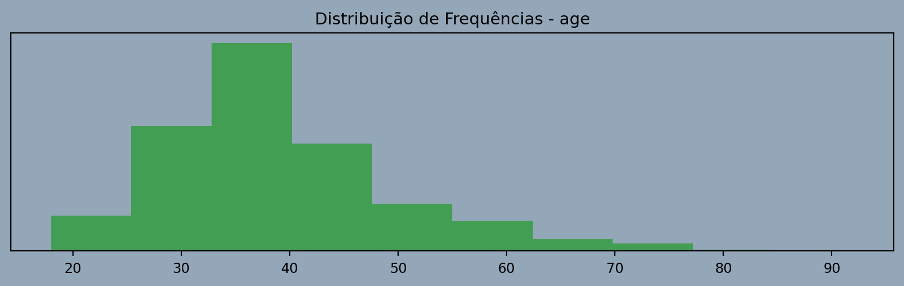
Balance
Saldo bancário do cliente
Avaliação: OK.- Variável numérica.
- Não possui nenhum valor faltante.
- Variável com distribuição assimétrica.
- Alta concetração de clientes com saldo entre 0 e 25 mil.
| SUM | CNT | AVG | STDEV | PERC_zeros | PERC_negatives | MIN | P1 | P25 | P50 | P75 | P90 | P95 | P99 | MAX | |
|---|---|---|---|---|---|---|---|---|---|---|---|---|---|---|---|
| 764,858,892.88 | 10000 | 76,485.89 | 62,397.41 | 0.36 | 0.00 | 0.00 | 0.00 | 0.00 | 97,198.54 | 127,644.24 | 149,244.79 | 162,711.67 | 185,967.99 | 250,898.09 |
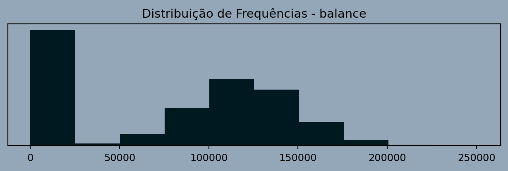
Estimated Salary
Salario estimado.
Avaliação: OK.- Variável numérica.
- Não possui nenhum valor faltante.
- Variável com distribuição uniforme.
| SUM | CNT | AVG | STDEV | PERC_zeros | PERC_negatives | MIN | P1 | P25 | P50 | P75 | P90 | P95 | P99 | MAX | |
|---|---|---|---|---|---|---|---|---|---|---|---|---|---|---|---|
| 1,000,902,398.81 | 10000 | 100,090.24 | 57,510.49 | 0.00 | 0.00 | 11.58 | 1,842.83 | 51,002.11 | 100,193.92 | 149,388.25 | 179,674.70 | 190,155.38 | 198,069.73 | 199,992.48 |
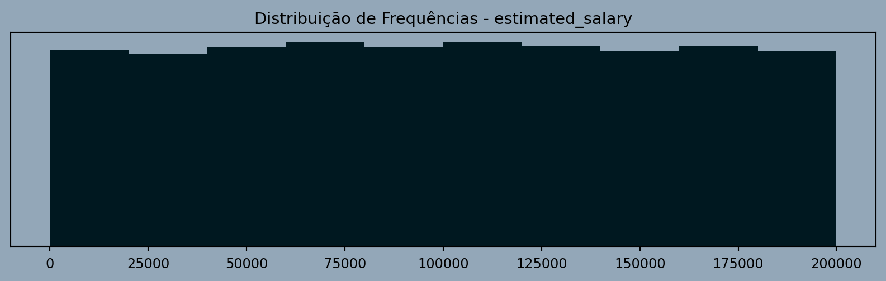
Análise Bivariada dos Dados
A análise bivariada tem como objetivo examinar a relação entre duas variáveis em um conjunto de dados. Ao contrário da análise univariada, que se concentra em uma única variável (EDA que fizemos no item anterior), a análise bivariada explora a associação entre duas variáveis.
Existem diferentes técnicas e métodos para realizar uma análise bivariada, dependendo da natureza das variáveis envolvidas. Para o nosso problema, estamos interessados em avaliar o grau de associação entre cada uma das possíveis variáveis preditoras e a variável target, dessa forma temos que:
churn: Categórica Binária (target)
country: Categórica
gender: Categórica
credit_card: Categórica
active_member: Categórica
producs_number: Numérica Discreta
tenure: Numérica Discreta
credit_score: Numérica Contínua
age: Numérica Discreta
balance: Numérica Contínua
estimated_salary: Numérica Contínua
A nossa abordagem será transformar todas as variáveis preditoras em categóricas, para posteriormente avaliarmos o grau de associação de cada uma delas frente a variável target, para isso teremos basicamente duas etapas:
- Binning das variáveis.
- Avaliação do Grau de Associação.
Binning
Chamaremos esse processo de transformação de uma variável numérica em categórica de binning. O processo de binning será feito através de um método denominado de optimal binning https://gnpalencia.org/optbinning/.
O optimal binning refere-se a uma abordagem estatística utilizada em análise de dados para agrupar valores de uma variável em intervalos (ou “bins”) de maneira a otimizar algum critério específico. A principal ideia por trás do binning ótimo é encontrar a divisão mais informativa ou significativa das observações, geralmente com base em algum critério de interesse, como a maximização da diferença nas médias entre os grupos ou a minimização da variabilidade intra-bin.
Ou seja, de forma resumida, vamos pegar um certa variável, por exemplo o balance (saldo da conta) e tentar discretizar em categorias onde fique mais evidente se a ocorrência de churn é maior ou menor.
Vale ressaltar que também vamos aplicar o optimal binning para as variáveis que já são categóricas, uma vez que esse processo de otimização pode gerar agrupamentos mais informativos (quanto a ocorrência de churn) do que as categorias já existentes.
Avaliação do Grau de Associação
Neste momento todas as nossas variáveis (preditoras e target) são categóricas, então para mensurar o grau de associação entre cada preditora e o target, utilizaremos o coeficiente Cramer’s V (V de Cramer).
O coeficiente V de Cramer é uma medida estatística utilizada em análises bivariadas para quantificar a força de associação entre duas variáveis categóricas. Essa medida é uma extensão do coeficiente qui-quadrado, que é comumente utilizado para testar a independência entre variáveis categóricas.
O coeficiente V de Cramer varia de 0 a 1, onde 0 indica nenhuma associação e 1 indica associação total entre as variáveis categóricas. https://en.wikipedia.org/wiki/Cram%C3%A9r%27s_VResultado da Análise Bivariada
Após o término da análise bivariada, conforme a tabela abaixo e os demais resultados que veremos na sequência, veremos que:
- age: É a variável com maior grau de associação com o evento de churn (Alta discriminância).
- products_number, country, active_member: Estão associadas de forma moderada com o evento de churn (Média discriminância).
- credit_score, tenure, estimated_salary e credit_card: Possuem baixo grau de associação com o evento de churn (Baixa discriminância).
As variáveis com alta e média discriminância têm maiores chances de serem consideradas como preditoras no modelo preditivo que iremos construir. Em contrapartida, as variáveis de baixa discriminância possuem menor propensão de serem utilizadas como preditoras nesse modelo.”
Observação
O critério utilizado para definir a discriminância não está levando em conta apenas se o valor de Cramer’s V está muito próximo de 0 ou 1, mas também considera o contexto dessa análise. Por exemplo, para a variável idade, temos Cramer’s V = 0.36, que é um valor mais próximo de 0 do que de 1. Se considerássemos apenas essa questão, diríamos que o grau de associação é moderado ou baixo.
No entanto, no contexto desta análise, a variável idade é a que possui o maior Cramer’s V. Portanto, dentro do nosso contexto, estamos considerando que o grau de associação com o evento é forte.
Para fins de esclarecimento, consideramos que:
- Cramer’s V > 0.20: Discriminância Alta.
- 0.20 <= Cramer’s V < 0.05: Discriminância Média.
- Cramer’s V <= 0.05: Discriminância Baixa.
| Feature | Cramer's V | Discriminância | |
|---|---|---|---|
| age | 0.36 | Alta | |
| products_number | 0.19 | Média | |
| country | 0.17 | Média | |
| active_member | 0.16 | Média | |
| balance | 0.12 | Média | |
| gender | 0.11 | Média | |
| credit_score | 0.04 | Baixa | |
| tenure | 0.04 | Baixa | |
| estimated_salary | 0.03 | Baixa | |
| credit_card | 0.01 | Baixa |
Age
Discriminância: Alta.- Quanto mais velho for o cliente, maior é a propensão de ocorrência do churn.
| Categoria | Não Churn | Churn | Total | % Churn | % Categoria | |
|---|---|---|---|---|---|---|
| (-inf, 27.50) | 947 | 73 | 1020 | 7.16 | 10.20 | |
| [27.50, 32.50) | 1630 | 140 | 1770 | 7.91 | 17.70 | |
| [32.50, 34.50) | 812 | 77 | 889 | 8.66 | 8.89 | |
| [34.50, 36.50) | 820 | 110 | 930 | 11.83 | 9.30 | |
| [36.50, 38.50) | 830 | 125 | 955 | 13.09 | 9.55 | |
| [38.50, 40.50) | 694 | 161 | 855 | 18.83 | 8.55 | |
| [40.50, 42.50) | 541 | 146 | 687 | 21.25 | 6.87 | |
| [42.50, 46.50) | 670 | 339 | 1009 | 33.60 | 10.09 | |
| [46.50, inf) | 1019 | 866 | 1885 | 45.94 | 18.85 |

Products Number
Discriminância: Média.- A ocorrência do churn é maior para clientes que contrataram somente 1 produto.
| Categoria | Não Churn | Churn | Total | % Churn | % Categoria | |
|---|---|---|---|---|---|---|
| (-inf, 1.50) | 3675 | 1409 | 5084 | 27.71 | 50.84 | |
| [1.50, inf) | 4288 | 628 | 4916 | 12.77 | 49.16 |

Country
Discriminância: Média.- A ocorrência do churn é maior para clientes da Alemanha.
| Categoria | Não Churn | Churn | Total | % Churn | % Categoria | |
|---|---|---|---|---|---|---|
| ['France'] | 4204 | 810 | 5014 | 16.15 | 50.14 | |
| ['Germany'] | 1695 | 814 | 2509 | 32.44 | 25.09 | |
| ['Spain'] | 2064 | 413 | 2477 | 16.67 | 24.77 |

Active Member
Discriminância: Média.- A ocorrência do churn é maior para clientes que não são ativos.
| Categoria | Não Churn | Churn | Total | % Churn | % Categoria | |
|---|---|---|---|---|---|---|
| ['0'] | 3547 | 1302 | 4849 | 26.85 | 48.49 | |
| ['1'] | 4416 | 735 | 5151 | 14.27 | 51.51 |

Balance
Discriminância: Média.- A ocorrência do churn é maior para clientes com saldo em conta maior ou igual a 1884.34 .
| Categoria | Não Churn | Churn | Total | % Churn | % Categoria | |
|---|---|---|---|---|---|---|
| ['< 1884.34'] | 3117 | 500 | 3617 | 13.82 | 36.17 | |
| ['>= 1884.34'] | 4846 | 1537 | 6383 | 24.08 | 63.83 |
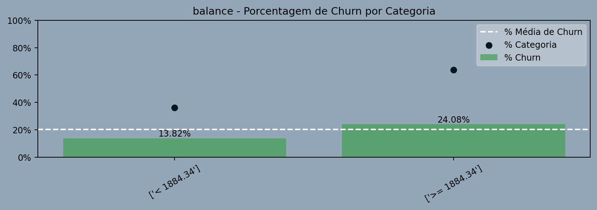
Gender
Discriminância: Média.- A ocorrência do churn é maior para clientes do sexo feminino.
| Categoria | Não Churn | Churn | Total | % Churn | % Categoria | |
|---|---|---|---|---|---|---|
| ['Female'] | 3404 | 1139 | 4543 | 25.07 | 45.43 | |
| ['Male'] | 4559 | 898 | 5457 | 16.46 | 54.57 |
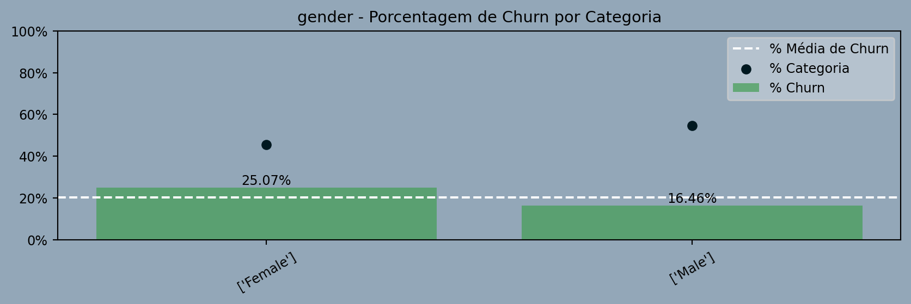
Credit Score
Discriminância: Baixa.- O fato isolado de quão bom ou ruim é o credit_score do cliente, não tem forte relação com o evento de churn.
| Categoria | Não Churn | Churn | Total | % Churn | % Categoria | |
|---|---|---|---|---|---|---|
| (-inf, 489.50) | 377 | 125 | 502 | 24.90 | 5.02 | |
| [489.50, 552.50) | 903 | 254 | 1157 | 21.95 | 11.57 | |
| [552.50, 629.50) | 1937 | 514 | 2451 | 20.97 | 24.51 | |
| [629.50, 651.50) | 696 | 181 | 877 | 20.64 | 8.77 | |
| [651.50, 678.50) | 859 | 194 | 1053 | 18.42 | 10.53 | |
| [678.50, 703.50) | 782 | 162 | 944 | 17.16 | 9.44 | |
| [703.50, 734.50) | 816 | 195 | 1011 | 19.29 | 10.11 | |
| [734.50, inf) | 1593 | 412 | 2005 | 20.55 | 20.05 |

Tenure
Discriminância: Baixa.- O fato isolado da quantidade de anos decorridos desde que o cliente aderiu aos serviços prestados pelo banco, não tem forte relação com o evento de churn.
| Categoria | Não Churn | Churn | Total | % Churn | % Categoria | |
|---|---|---|---|---|---|---|
| (-inf, 1.50) | 1121 | 327 | 1448 | 22.58 | 14.48 | |
| [1.50, 5.50) | 3232 | 826 | 4058 | 20.35 | 40.58 | |
| [5.50, 6.50) | 771 | 196 | 967 | 20.27 | 9.67 | |
| [6.50, 7.50) | 851 | 177 | 1028 | 17.22 | 10.28 | |
| [7.50, 8.50) | 828 | 197 | 1025 | 19.22 | 10.25 | |
| [8.50, inf) | 1160 | 314 | 1474 | 21.30 | 14.74 |
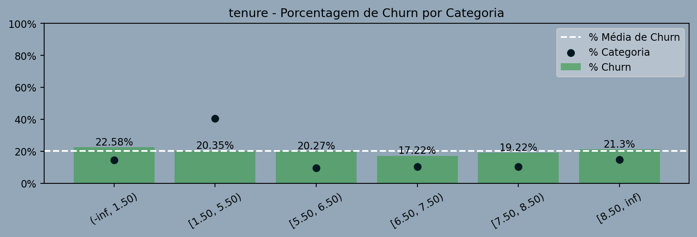
Estimated Salary
Discriminância: Baixa.- O fato isolado de quão alto ou baixo é o salário do cliente, não tem forte relação com o evento de churn.
| Categoria | Não Churn | Churn | Total | % Churn | % Categoria | |
|---|---|---|---|---|---|---|
| (-inf, 33482.46) | 1297 | 343 | 1640 | 20.91 | 16.40 | |
| [106162.09, 169420.42) | 2474 | 647 | 3121 | 20.73 | 31.21 | |
| [169420.42, inf) | 1201 | 341 | 1542 | 22.11 | 15.42 | |
| [33482.46, 73970.20) | 1620 | 402 | 2022 | 19.88 | 20.22 | |
| [73970.20, 83463.54) | 423 | 78 | 501 | 15.57 | 5.01 | |
| [83463.54, 106162.09) | 948 | 226 | 1174 | 19.25 | 11.74 |
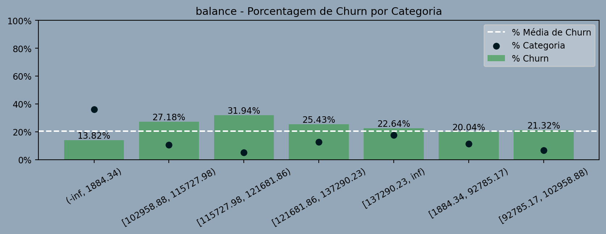
Credit Card
Discriminância: Baixa.- O fato isolado do cliente ter ou não cartão de cŕedito, não tem forte relação com o evento de churn.
| Categoria | Não Churn | Churn | Total | % Churn | % Categoria | |
|---|---|---|---|---|---|---|
| ['0'] | 2332 | 613 | 2945 | 20.81 | 29.45 | |
| ['1'] | 5631 | 1424 | 7055 | 20.18 | 70.55 |
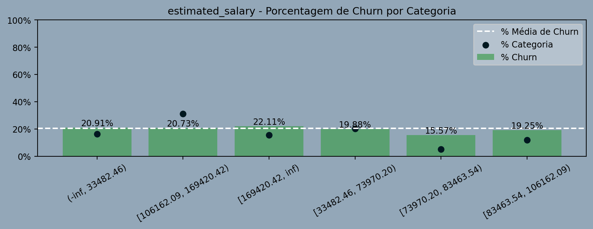
O Modelo Preditivo
Assim que possível estarei atualizando esse tópico.